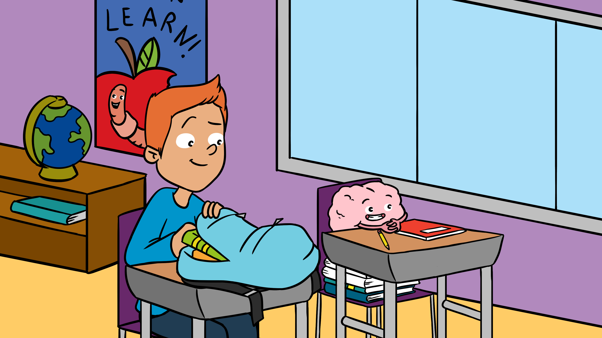

Never too young to learn

When you launch an article Collection on ‘Everything you and your teachers need to know about the learning brain’, you cannot simply stay behind your desk: you have to go to the ‘field’, the classroom!One of our Collection Editors, Nienke van Atteveldt, therefore shares her experiences of embarking on the mission of teaching kids the valuable lessons of critical thinking and recognizing scientific information.— By Nienke van Atteveldt.(Originally written in Dutch and published by Bionieuws)
Nowadays, it’s not always easy to know what you can and cannot believe.The internet provides access to almost everything that has ever been written, spoken or sung.I wonder how that must be for today’s children, for whom YouTube and Google are the information tools they know best.How do they learn the difference between information based on science, and content that someone creates just for fun or to convince others?
One of my current projects has exactly this mission.You may have heard of the journal Frontiers for Young Minds, which publishes scientific articles written for kids.This is great, because it makes the latest scientific insights accessible for a younger audience.
The very best part of the journal, however, is that children are the peer reviewers!Together with an adult Science Mentor, they read a submitted manuscript and discuss several aspects, such as ‘What are the authors trying to tell you?Why is this information relevant for you?Which parts did you find confusing?Do you have suggestions for the authors?’.A beautiful lesson in critical reading, thinking and the scientific method.
By doing it themselves, kids learn the importance of peer review i.e. how your scientific results are evaluated by independent colleagues.They also learn the main reasons why scientific articles are a much more reliable source of objective information than opinion or fiction articles.Never too young to learn!
The only downside I can think of is that the journal is currently only available in English and Hebrew.As a result, children that speak other languages miss these wise lessons in critical thinking and recognizing scientific information.Therefore, together with a colleague from Leiden University, Sabine Peters, I launched the Collection ‘Everything you and your teachers need to know about the learning brain’, which we will translate into Dutch.And thanks to the kind support of the Jacobs Foundation, this Collection will also be translated into German, Spanish, Portuguese and French.
To fulfill my mission as thoroughly as possible, I organized a review session at the school of my Dutch children.I began by explaining why scientists write articles, and the importance of peer review.I asked why they thought peer review would be important, and got some very interesting answers.For example: ‘because someone can lie’.I asked why they would do that, and the answer was ‘because they want to be famous’.The truth can be very simple.I explained that, fortunately, this occurs only very rarely.
It was delightful to see how eager children are to learn how everything works.A common answer to the question ‘why is this important for you to know?’was ‘Because it is about me’.It helps them to understand themselves, how wonderful is that!That with their ‘girl brain’ they can learn mathematics just as well as the boys.That cramming vocabulary late at night for an exam the next day, instead of spacing their learning and getting a good night’s sleep, is a bad idea.
The first seeds are planted for them to tell the difference between scientifically grounded information and opinions.Mission accomplished.With the bonus that they learned something about themselves and their learning brains.
Keep an eye out on this Collection, as the first articles in English will be published soon!
Posted On: 2020-03-16T00:00:00
Content Date: 2020-03-16
Download Date: 2021-07-10
Document ID: L0C04F5LE